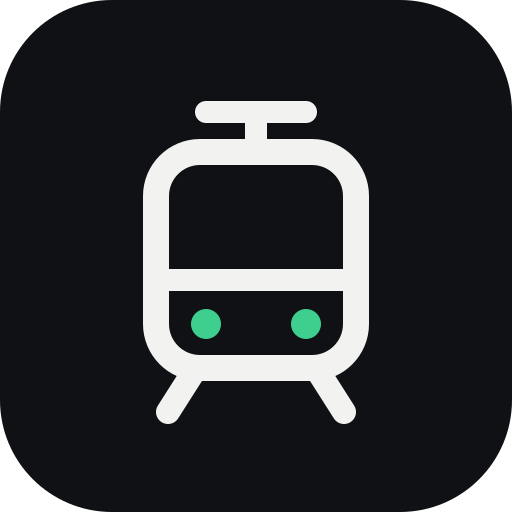

Live data compared with the timetable.
Assistants only answer for your first favorite: . To change it, make another route your first favorite.
Your favorites are saved online under this code, so assistants can read them. Keep it to yourself.
Live between two stops? NextTram checks both and shows whichever gets you there first.